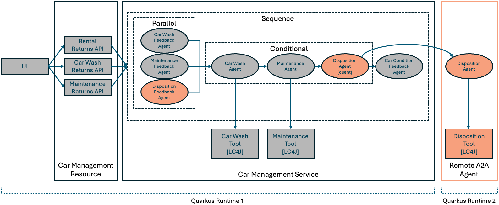
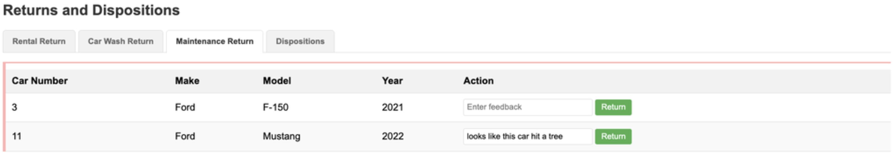

Step 04 - Using remote agents (A2A)
Time to get rid of some cars!
The Miles of Smiles team has decided they need to get rid of cars that are no longer in good enough shape to rent out. When car return feedback warrants disposing of a car, they want to send the car to a car broker who will then sell, donate, or scrap it. The Miles of Smiles team will still make the determination of which cars to get rid of, and the car broker will take action on their request. The car broker has their own agent that handles car dispositions.
Agent2Agent (A2A)
The Agent2Agent protocol can be used to enable agents to communicate to each other remotely.
LangChain4j provides the langchain4j-agentic-a2a module, which can be used with langchain4j-agentic to add remote agents to a workflow in the same way as you have been adding local agents. We will add an A2A agent to our existing app that we will then add to our workflow. Communicating with this local agent causes a2a to send the agent request to the remotely connected agent.
You will see how the A2A sdk handles the protocol in our remote A2A server built on Quarkus. As part of the protocol, agents defined in the server must provide an AgentCard which describes:
- The name and description of the agent
- The agent’s capabilities (the parts of the A2A protocol it supports)
- The agent’s skills (what the agent’s purpose is)
- etc.
A2A Agents must also define an AgentExecutor. The A2A sdk calls the AgentExecutor.execute method when it wants to invoke your agent. Your implementation of the AgentExecutor interface is responsible for calling your agent (for example your LangChain4j AI service or Agent). The AgentExecutor.execute method has the following signature:
The execute method is invoked when a task or message need to be handled.
Tasks have unique IDs, have a state (submitted, working, input-required, auth-required, completed, canceled, failed, rejected or unknown), and can be reference across requests to the A2A agent. As such, tasks are created for tracking work on a specific topic (eg. a hotel booking) that may not complete within a few seconds.
Messages have unique IDs but no tracked state. They are good for short requests that do not require more than the recent message history to provide responses for.
Our DispositionAgent will handle getting rid of cars, where each disposition of a car is a task.
What are we going to build?

Starting from our app in step-03, we need to do the following for the original Quarkus Runtime 1:
- Create a new DispositionFeedbackAgent
- Create a new DispositionAgent (for the client side)
- Modify the ActionWorkflow to accept the disposition feedback agent’s output
- Modify the agents and workflows in CarManagementService
- Define the DispositionFeedbackAgent and DispositionAgent
- Include the DispositionFeedbackAgent in the parallel workflow
- Include the DispositionAgent in the conditional workflow
- Modify the CarConditionFeedbackAgent to use input from the DispositionFeedbackAgent
Before you begin
If you are continuing to build the app in the step-01 directory, start by copying some files (which don’t relate to the experience of building agentic AI apps) from step-04:
For Linux/macOS:
cd ./step-01
cp ../step-04/multi-agent-system/pom.xml ./multi-agent-system/pom.xml
cp ../step-04/multi-agent-system/src/main/java/com/carmanagement/model/CarInfo.java ./multi-agent-system/src/main/java/com/carmanagement/model/CarInfo.java
cp ../step-04/multi-agent-system/src/main/java/com/carmanagement/model/CarStatus.java ./multi-agent-system/src/main/java/com/carmanagement/model/CarStatus.java
cp ../step-04/multi-agent-system/src/main/java/com/carmanagement/service/CarService.java ./multi-agent-system/src/main/java/com/carmanagement/service/CarService.java
cp ../step-04/multi-agent-system/src/main/resources/static/css/styles.css ./multi-agent-system/src/main/resources/static/css/styles.css
cp ../step-04/multi-agent-system/src/main/resources/static/js/app.js ./multi-agent-system/src/main/resources/static/js/app.js
cp ../step-04/multi-agent-system/src/main/resources/templates/index.html ./multi-agent-system/src/main/resources/templates/index.html
For Windows:
cd .\step-01
copy ..\step-04\multi-agent-system\pom.xml .\multi-agent-system\pom.xml
copy ..\step-04\multi-agent-system\src\main\java\com\carmanagement\model\CarInfo.java .\multi-agent-system\src\main\java\com\carmanagement\model\CarInfo.java
copy ..\step-04\multi-agent-system\src\main\java\com\carmanagement\model\CarStatus.java .\multi-agent-system\src\main\java\com\carmanagement\model\CarStatus.java
copy ..\step-04\multi-agent-system\src\main\java\com\carmanagement\service\CarService.java .\multi-agent-system\src\main\java\com\carmanagement\service\CarService.java
copy ..\step-04\multi-agent-system\src\main\resources\static\css\styles.css .\multi-agent-system\src\main\resources\static\css\styles.css
copy ..\step-04\multi-agent-system\src\main\resources\static\js\app.js .\multi-agent-system\src\main\resources\static\js\app.js
copy ..\step-04\multi-agent-system\src\main\resources\templates\index.html .\multi-agent-system\src\main\resources\templates\index.html
Create a new DispositionFeedbackAgent
package com.carmanagement.agentic.agents;
import dev.langchain4j.service.SystemMessage;
import dev.langchain4j.service.UserMessage;
import dev.langchain4j.service.V;
import dev.langchain4j.agentic.Agent;
/**
* Agent that analyzes feedback to determine if a car should be disposed of.
*/
public interface DispositionFeedbackAgent {
@SystemMessage("""
/nothink, Reasoning: low.
You are a car disposition analyzer for a car rental company. Your job is to determine if a car should be disposed of based on feedback.
Analyze the maintenance feedback and car information to decide if the car should be scrapped, sold, or donated.
If the car is in decent shape, respond with "DISPOSITION_NOT_REQUIRED".
Include the reason for your choice but keep your response short.
""")
@UserMessage("""
Car Information:
Make: {{carMake}}
Model: {{carModel}}
Year: {{carYear}}
Previous Condition: {{carCondition}}
Feedback:
Rental Feedback: {{rentalFeedback}}
Car Wash Feedback: {{carWashFeedback}}
Maintenance Feedback: {{maintenanceFeedback}}
""")
@Agent("Car disposition analyzer. Using feedback, determines if a car should be disposed of.")
String analyzeForDisposition(
@V("carMake") String carMake,
@V("carModel") String carModel,
@V("carYear") Integer carYear,
@V("carNumber") Integer carNumber,
@V("carCondition") String carCondition,
@V("rentalFeedback") String rentalFeedback,
@V("carWashFeedback") String carWashFeedback,
@V("maintenanceFeedback") String maintenanceFeedback);
}
As we’ve done with the other agents, we set the system message, user message, and annotate the method that we want to be the agent method.
Create a new DispositionAgent (for the client side)
package com.carmanagement.agentic.agents;
import dev.langchain4j.service.V;
import dev.langchain4j.agentic.Agent;
/**
* Agent that determines how to dispose of a car.
*/
public interface DispositionAgent {
@Agent("Car disposition specialist. Determines how to dispose of a car.")
String processDisposition(
@V("carMake") String carMake,
@V("carModel") String carModel,
@V("carYear") Integer carYear,
@V("carNumber") Integer carNumber,
@V("carCondition") String carCondition,
@V("dispositionRequest") String dispositionRequest);
}
This agent, which we’ll use as the A2A client, doesn’t have system message or user message annotations since it is just acting as a type-safe interface for us to invoke the remote A2A agent. Notice this is very similar to how we define workflows (since neither workflows nor A2A client agents interact directly with LLMs).
Modify the ActionWorkflow to accept the disposition feedback agent’s output
@Agent
String processAction(
@V("carMake") String carMake,
@V("carModel") String carModel,
@V("carYear") Integer carYear,
@V("carNumber") Integer carNumber,
@V("carCondition") String carCondition,
@V("carWashRequest") String carWashRequest,
@V("maintenanceRequest") String maintenanceRequest,
@V("dispositionRequest") String dispositionRequest);
Modify the agents and workflows in CarManagementService
package com.carmanagement.service;
import com.carmanagement.agentic.agents.CarConditionFeedbackAgent;
import com.carmanagement.agentic.agents.CarWashAgent;
import com.carmanagement.agentic.agents.CarWashFeedbackAgent;
import com.carmanagement.agentic.agents.DispositionAgent;
import com.carmanagement.agentic.agents.DispositionFeedbackAgent;
import com.carmanagement.agentic.agents.MaintenanceAgent;
import com.carmanagement.agentic.agents.MaintenanceFeedbackAgent;
import com.carmanagement.agentic.config.Models;
import com.carmanagement.agentic.tools.CarWashTool;
import com.carmanagement.agentic.tools.MaintenanceTool;
import com.carmanagement.agentic.workflow.ActionWorkflow;
import com.carmanagement.agentic.workflow.CarProcessingWorkflow;
import com.carmanagement.agentic.workflow.FeedbackWorkflow;
import com.carmanagement.model.CarInfo;
import com.carmanagement.model.CarStatus;
import dev.langchain4j.agentic.AgenticServices;
import dev.langchain4j.agentic.scope.AgenticScope;
import dev.langchain4j.agentic.scope.ResultWithAgenticScope;
import jakarta.enterprise.context.ApplicationScoped;
import jakarta.inject.Inject;
import jakarta.annotation.PostConstruct;
/**
* Service for managing car returns from various operations.
*/
@ApplicationScoped
public class CarManagementService {
/**
* Enum representing the type of agent to be selected for car processing
*/
public enum AgentType {
DISPOSITION,
MAINTENANCE,
CAR_WASH,
NONE
}
@Inject
CarService carService;
@Inject
Models models = null;
@Inject
CarWashTool carWashTool;
@Inject
MaintenanceTool maintenanceTool;
private CarProcessingWorkflow carProcessingWorkflow;
@PostConstruct
void initialize() {
carProcessingWorkflow = createCarProcessingWorkflow();
}
private CarProcessingWorkflow createCarProcessingWorkflow() {
// CarWashAgent
CarWashAgent carWashAgent = AgenticServices
.agentBuilder(CarWashAgent.class)
.chatModel(models.baseModel())
.tools(carWashTool)
.outputName("carWashAgentResult")
.build();
// MaintenanceAgent
MaintenanceAgent maintenanceAgent = AgenticServices
.agentBuilder(MaintenanceAgent.class)
.chatModel(models.baseModel())
.tools(maintenanceTool)
.outputName("maintenanceAgentResult")
.build();
// DispositionAgent
DispositionAgent dispositionAgent = AgenticServices
.a2aBuilder("http://localhost:8888", DispositionAgent.class)
.outputName("dispositionAgentResult")
.build();
// CarWashFeedbackAgent
CarWashFeedbackAgent carWashFeedbackAgent = AgenticServices
.agentBuilder(CarWashFeedbackAgent.class)
.chatModel(models.baseModel())
.outputName("carWashRequest")
.build();
// DispositionFeedbackAgent
DispositionFeedbackAgent dispositionFeedbackAgent = AgenticServices
.agentBuilder(DispositionFeedbackAgent.class)
.chatModel(models.baseModel())
.outputName("dispositionRequest")
.build();
// MaintenanceFeedbackAgent
MaintenanceFeedbackAgent maintenanceFeedbackAgent = AgenticServices
.agentBuilder(MaintenanceFeedbackAgent.class)
.chatModel(models.baseModel())
.outputName("maintenanceRequest")
.build();
// CarConditionFeedbackAgent
CarConditionFeedbackAgent carConditionFeedbackAgent = AgenticServices
.agentBuilder(CarConditionFeedbackAgent.class)
.chatModel(models.baseModel())
.outputName("carCondition")
.build();
// FeedbackWorkflow
FeedbackWorkflow feedbackWorkflow = AgenticServices
.parallelBuilder(FeedbackWorkflow.class)
.subAgents(carWashFeedbackAgent, maintenanceFeedbackAgent, dispositionFeedbackAgent)
.outputName("feedbackResult")
.build();
// ActionWorkflow
ActionWorkflow actionWorkflow = AgenticServices
.conditionalBuilder(ActionWorkflow.class)
.subAgents(
// Check if disposition is required
agenticScope -> selectAgent(agenticScope) == AgentType.DISPOSITION,
dispositionAgent
)
.subAgents(
// Check if maintenance is required
agenticScope -> selectAgent(agenticScope) == AgentType.MAINTENANCE,
maintenanceAgent
)
.subAgents(
// Check if car wash is required
agenticScope -> selectAgent(agenticScope) == AgentType.CAR_WASH,
carWashAgent
)
.outputName("actionResult")
.build();
// CarProcessingWorkflow
CarProcessingWorkflow carProcessingWorkflow = AgenticServices
.sequenceBuilder(CarProcessingWorkflow.class)
.subAgents(feedbackWorkflow, actionWorkflow, carConditionFeedbackAgent)
.outputName("carProcessingAgentResult")
.build();
return carProcessingWorkflow;
}
/**
* Process a car return from any operation.
*
* @param carNumber The car number
* @param rentalFeedback Optional rental feedback
* @param carWashFeedback Optional car wash feedback
* @param maintenanceFeedback Optional maintenance feedback
* @return Result of the processing
*/
public String processCarReturn(Integer carNumber, String rentalFeedback, String carWashFeedback, String maintenanceFeedback) {
CarInfo carInfo = carService.getCarById(carNumber);
if (carInfo == null) {
return "Car not found with number: " + carNumber;
}
// Process the car return using the workflow and get the AgenticScope
ResultWithAgenticScope<String> resultWithScope = carProcessingWorkflow.processCarReturn(
carInfo.getMake(),
carInfo.getModel(),
carInfo.getYear(),
carNumber,
carInfo.getCondition(),
rentalFeedback != null ? rentalFeedback : "",
carWashFeedback != null ? carWashFeedback : "",
maintenanceFeedback != null ? maintenanceFeedback : "");
String result = resultWithScope.result();
AgenticScope scope = resultWithScope.agenticScope();
// Update the car's condition with the result from CarConditionFeedbackAgent
String newCondition = (String) scope.readState("carCondition");
if (newCondition != null && !newCondition.isEmpty()) {
carInfo.setCondition(newCondition);
}
// Set car status to available if no actions are required
AgentType selectedAgent = selectAgent(scope);
if (selectedAgent == AgentType.NONE) {
carInfo.setStatus(CarStatus.AVAILABLE);
} else if (selectedAgent == AgentType.DISPOSITION) {
carInfo.setStatus(CarStatus.PENDING_DISPOSITION);
}
return result;
}
/**
* Determines which agent should be selected based on the requirements in the AgenticScope
*
* @param agenticScope The current AgenticScope containing request states
* @return The appropriate AgentType to handle the car
*/
private static AgentType selectAgent(AgenticScope agenticScope) {
AgentType result;
// Check disposition first (highest priority)
if (isRequired(agenticScope, "dispositionRequest")) {
result = AgentType.DISPOSITION;
}
// Check maintenance second (medium priority)
else if (isRequired(agenticScope, "maintenanceRequest")) {
result = AgentType.MAINTENANCE;
}
// Check car wash last (lowest priority)
else if (isRequired(agenticScope, "carWashRequest")) {
result = AgentType.CAR_WASH;
}
// No agent required
else {
result = AgentType.NONE;
}
System.out.println("selectAgent: " + result);
return result;
}
private static boolean isRequired(AgenticScope agenticScope, String key) {
String s = (String)agenticScope.readState(key);
boolean required = s != null && !s.isEmpty() && !s.toUpperCase().contains("NOT_REQUIRED");
return required;
}
}
Define the DispositionFeedbackAgent and DispositionAgent
We use the a2abuilder method to create an A2A agent out of the DispositionAgent interface.
Include the DispositionFeedbackAgent in the parallel workflow
This enables the 3 feedback agents to run at the same time.
Include the DispositionAgent in the conditional workflow
The condition specified checks to see if the disposition agent is the one of the 3 selected to run, based on the output from the feedback agents.
Modify the CarConditionFeedbackAgent to use input from the DispositionFeedbackAgent
@UserMessage("""
Car Information:
Make: {{carMake}}
Model: {{carModel}}
Year: {{carYear}}
Previous Condition: {{carCondition}}
Feedback from other agents:
Car Wash Recommendation: {{carWashRequest}}
Maintenance Recommendation: {{maintenanceRequest}}
Disposition Recommendation: {{dispositionRequest}}
""")
@Agent("Car condition analyzer. Determines the current condition of a car based on feedback.")
String analyzeForCondition(
@V("carMake") String carMake,
@V("carModel") String carModel,
@V("carYear") Integer carYear,
@V("carNumber") Integer carNumber,
@V("carCondition") String carCondition,
@V("dispositionRequest") String dispositionRequest,
@V("carWashRequest") String carWashRequest,
@V("maintenanceRequest") String maintenanceRequest);
Starting from our app in step-03, we need to do the following for Quarkus Runtime 2 (the Remote A2A Agent)
- Create a new Quarkus project for the remote A2A agent
- Create a new DispositionAgent
- Create a new DispositionTool
- Create a new DispositionAgentCard
- Create a new DispositionAgentExecutor
Before you begin
Run the following commands to get your second Quarkus project set up with some initial files.
For Linux/macOS:
cd ./step-01
mkdir remote-a2a-agent
cp ../step-04/remote-a2a-agent/mvnw.cmd ./remote-a2a-agent/mvnw.cmd
cp ../step-04/remote-a2a-agent/pom.xml ./remote-a2a-agent/pom.xml
cp ../step-04/remote-a2a-agent/README.md ./remote-a2a-agent/README.md
cp ../step-04/remote-a2a-agent/.gitignore ./remote-a2a-agent/.gitignore
cp ../step-04/remote-a2a-agent/.mvn/wrapper/.gitignore ./remote-a2a-agent/.mvn/wrapper/.gitignore
cp ../step-04/remote-a2a-agent/mvnw ./remote-a2a-agent/mvnw
cp ../step-04/remote-a2a-agent/src/main/resources/application.properties ./remote-a2a-agent/src/main/resources/application.properties
For Windows:
cd .\step-01
mkdir remote-a2a-agent
copy ..\step-04\remote-a2a-agent\mvnw.cmd .\remote-a2a-agent\mvnw.cmd
copy ..\step-04\remote-a2a-agent\pom.xml .\remote-a2a-agent\pom.xml
copy ..\step-04\remote-a2a-agent\README.md .\remote-a2a-agent\README.md
copy ..\step-04\remote-a2a-agent\.gitignore .\remote-a2a-agent\.gitignore
mkdir .\remote-a2a-agent\.mvn\wrapper
copy ..\step-04\remote-a2a-agent\.mvn\wrapper\.gitignore .\remote-a2a-agent\.mvn\wrapper\.gitignore
copy ..\step-04\remote-a2a-agent\mvnw .\remote-a2a-agent\mvnw
mkdir .\remote-a2a-agent\src\main\resources
copy ..\step-04\remote-a2a-agent\src\main\resources\application.properties .\remote-a2a-agent\src\main\resources\application.properties
Create a new Quarkus project for the remote A2A agent
The files you have already copied from step-04 include the Quarkus project setup. Take a moment to look at the pom.xml file to see the new dependency added for langchain4j-agentic-a2a.
Create a new DispositionAgent
package com.demo;
import dev.langchain4j.service.SystemMessage;
import dev.langchain4j.service.UserMessage;
import dev.langchain4j.service.V;
import io.quarkiverse.langchain4j.RegisterAiService;
import io.quarkiverse.langchain4j.ToolBox;
import jakarta.enterprise.context.ApplicationScoped;
/**
* Agent that determines how to dispose of a car.
*/
@RegisterAiService
@ApplicationScoped
public interface DispositionAgent {
@SystemMessage("""
/nothink, Reasoning: low.
You handle intake for the car disposition department.
It is your job to submit a request to the provided DispositionTool function to take action on the request (SCRAP, SELL, or DONATE).
Be specific about what disposition option is most appropriate based on the car's condition.
""")
@UserMessage("""
Car Information:
Make: {{carMake}}
Model: {{carModel}}
Year: {{carYear}}
Car Number: {{carNumber}}
Previous Car Condition:
{{carCondition}}
Disposition Request:
{{dispositionRequest}}
""")
@ToolBox(DispositionTool.class)
String processDisposition(
@V("carMake") String carMake,
@V("carModel") String carModel,
@V("carYear") Integer carYear,
@V("carNumber") Integer carNumber,
@V("carCondition") String carCondition,
@V("dispositionRequest") String dispositionRequest);
}
Similar to our CarWashAgent and MaintenanceAgent.
Create a new DispositionTool
package com.demo;
import dev.langchain4j.agent.tool.Tool;
import jakarta.inject.Singleton;
/**
* Tool for requesting car disposition operations.
* This tool is used by the LLM to determine the appropriate disposition for a car.
*/
@Singleton
public class DispositionTool {
/**
* Enum representing the possible disposition options for a car.
*/
public enum DispositionOption {
SCRAP("Scrap the car"),
SELL("Sell the car"),
DONATE("Donate the car");
private final String description;
DispositionOption(String description) {
this.description = description;
}
public String getDescription() {
return description;
}
}
/**
* Requests disposition for a car based on the provided parameters.
*
* @param carNumber The car number
* @param carMake The car make
* @param carModel The car model
* @param carYear The car year
* @param dispositionOption The disposition option (SCRAP, SELL, or DONATE)
* @param carCondition The condition of the car
* @return A summary of the disposition request
*/
@Tool(name = "DispositionTool")
public String requestDisposition(
Integer carNumber,
String carMake,
String carModel,
Integer carYear,
DispositionOption dispositionOption,
String carCondition) {
// In a real implementation, this would make an API call to a disposition service
// or update a database with the disposition request
StringBuilder summary = new StringBuilder();
summary.append("Car disposition requested for ").append(carMake).append(" ")
.append(carModel).append(" (").append(carYear).append("), Car #")
.append(carNumber).append(": ")
.append(dispositionOption.getDescription())
.append("\n");
String result = summary.toString();
System.out.println("DispositionTool result: " + result);
return result;
}
}
Similar to our CarWashTool and MaintenanceTool.
Create a new DispositionAgentCard
package com.demo;
import java.util.Collections;
import java.util.List;
import jakarta.enterprise.context.ApplicationScoped;
import jakarta.enterprise.inject.Produces;
import io.a2a.server.PublicAgentCard;
import io.a2a.spec.AgentCapabilities;
import io.a2a.spec.AgentCard;
import io.a2a.spec.AgentSkill;
@ApplicationScoped
public class DispositionAgentCard {
@Produces
@PublicAgentCard
public AgentCard agentCard() {
return new AgentCard.Builder()
.name("Disposition Agent")
.description("Determines how a car should be disposed of based on the car condition and disposition request.")
.url("http://localhost:8888/")
.version("1.0.0")
.documentationUrl("http://example.com/docs")
.capabilities(new AgentCapabilities.Builder()
.streaming(true)
.pushNotifications(true)
.stateTransitionHistory(true)
.build())
.defaultInputModes(Collections.singletonList("text"))
.defaultOutputModes(Collections.singletonList("text"))
.skills(Collections.singletonList(new AgentSkill.Builder()
.id("disposition")
.name("Car disposition")
.description("Makes a request to dispose of a car (SCRAP, SELL, or DONATE)")
.tags(List.of("disposition"))
.build()))
.protocolVersion("0.2.5")
.build();
}
}
The agent card provides:
- A description of the agent
- A URL to invoke the agent with
- A URL for the agent’s documentation
- An indication of the agent’s supported A2A capabilities
- Input and output modes
- A description of the skills the agent provides
- An A2A protocol version
This information is provided to clients that connect to the A2A server so that they know when and how to use the agent.
Create a new DispositionAgentExecutor
package com.demo;
import jakarta.enterprise.context.ApplicationScoped;
import jakarta.enterprise.inject.Produces;
import jakarta.inject.Inject;
import io.a2a.server.agentexecution.AgentExecutor;
import io.a2a.server.agentexecution.RequestContext;
import io.a2a.server.events.EventQueue;
import io.a2a.server.tasks.TaskUpdater;
import java.util.ArrayList;
import java.util.List;
import io.a2a.spec.JSONRPCError;
import io.a2a.spec.Message;
import io.a2a.spec.Part;
import io.a2a.spec.TextPart;
import io.a2a.spec.UnsupportedOperationError;
/**
* Executor for the DispositionAgent.
* Handles the integration between the A2A framework and the DispositionAgent.
*/
@ApplicationScoped
public class DispositionAgentExecutor {
@Inject
DispositionAgent dispositionAgent;
@Inject
DispositionTool dispositionTool;
@Produces
public AgentExecutor agentExecutor(DispositionAgent dispositionAgent) {
return new AgentExecutor() {
@Override
public void execute(RequestContext context, EventQueue eventQueue) throws JSONRPCError {
TaskUpdater updater = new TaskUpdater(context, eventQueue);
if (context.getTask() == null) {
updater.submit();
}
updater.startWork();
List<String> inputs = new ArrayList<>();
// Process the request message
Message message = context.getMessage();
if (message.getParts() != null) {
for (Part<?> part : message.getParts()) {
if (part instanceof TextPart textPart) {
System.out.println("Text part: " + textPart.getText());
inputs.add(textPart.getText());
}
}
}
// Call the agent with all parameters as strings
String agentResponse = dispositionAgent.processDisposition(
inputs.get(0), // carMake
inputs.get(1), // carModel
Integer.parseInt(inputs.get(2)), // carYear
Integer.parseInt(inputs.get(3)), // carNumber
inputs.get(4), // carCondition
inputs.get(5)); // dispositionRequest
// Return the result
TextPart responsePart = new TextPart(agentResponse, null);
List<Part<?>> parts = List.of(responsePart);
updater.addArtifact(parts, null, null, null);
updater.complete();
}
@Override
public void cancel(RequestContext context, EventQueue eventQueue) throws JSONRPCError {
throw new UnsupportedOperationError();
}
};
}
}
In the execute method we need to take action on the task:
-
Line 39: We initialize a TaskUpdater, which is responsible for making updates to the Task status and recording events (such as Task status updates or additions of artifacts to the task) in the EventQueue.
-
Lines 40-43: If there is no task currently in the RequestContext we put the task into the initial submitted state. If the task already exists, we put it into working state.
-
Lines 48-56: We extract the message parts from the request context. When an A2A agent has multiple parameters, each parameter gets stored as a separate message part.
-
Lines 59-65: We invoke our LangChain4j DispositionAgent with the same parameters as were provided to the A2A agent.
-
Lines 68-71: We put the agent’s response into an artifact in the Task and mark the task complete. This will result in the response being made available to the A2A client agent.
Trying out the new workflow
Ensure both Quarkus runtimes are running. From each of the multi-agent-system and remote-a2a-agent directories, run the following command (if it is not already running):
After reloading the UI, you should see the Returns section is now called Returns and Dispositions. You’ll also notice that there is a new tab to list the cars that are pending disposition.
On the Maintenance Return tab, try entering feedback that would suggest there is something wrong with the car (so that it should be disposed of). For example:

In the logs of Quarkus runtime 2, you should be able to see that the disposition agent called its disposition tool and the tool initiated the disposition of the vehicle.